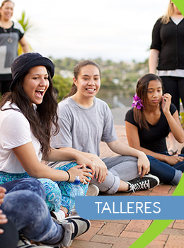

<!DOCTYPE html>
<html lang="es"></html>
<head>
  <meta charset="UTF-8"/>
  <meta name="viewport" content="width=device-width, initial-scale=1.0"/>
  <meta http-equiv="X-UA-Compatible" content="ie=edge"/>
  <meta name="description" content="Este es el proyecto final del curso HTML5 desde cero"/>
  <title>Vocativa | Talleres</title>
  <link rel="stylesheet" href="https://maxcdn.bootstrapcdn.com/bootstrap/3.3.7/css/bootstrap.min.css" integrity="sha384-BVYiiSIFeK1dGmJRAkycuHAHRg32OmUcww7on3RYdg4Va+PmSTsz/K68vbdEjh4u" crossorigin="anonymous"/>
  <link rel="stylesheet" type="text/css" href="css/estilos.css"/>
  <link rel="icon" href="favicon.ico"/>
</head>
<body>
  <header>
    <div class="container">
      <div class="row">
        <div class="col-md-12">
          <div class="cabecera">
            <div class="logo pull-left"></div>
            <div class="contactos-redes pull-right"><span>Email: </span><a href="#">consultas@vocativa.com.pe</a></div>
          </div>
        </div>
      </div>
    </div>
  </header>
  <nav class="navbar navbar-default">
    <div class="container">
      <ul class="nav navbar-nav navbar-right">
        <li class="undefined"><a href="index.html">Portada</a></li>
        <li class="undefined"><a href="nosotros.html">Nosotros</a></li>
        <li class="dropdown active"><a href="#" data-toggle="dropdown" role="button" aria-haspopup="true" aria-expanded="false" class="dropdown-toggle">Servicios <span class="caret"></span></a>
          <ul class="dropdown-menu">
            <li><a href="evaluaciones.html">Evaluaciones Psicológicas </a></li>
            <li><a href="orientacion-vocacional.html">Orientación Vocacional </a></li>
            <li><a href="talleres.html">Talleres </a></li>
          </ul>
        </li>
        <li class="undefined"><a href="#">Noticias y Eventos</a></li>
        <li class="undefined"><a href="#">Contáctanos</a></li>
        <li class="undefined"><a href="#">941404447/986552756</a></li>
      </ul>
    </div>
  </nav>
  <div class="banner"></div>
  <main> 
    <div class="container">
      <div class="row">
        <div class="col-md-9">
          <div class="main-wrap">
            <h2>Talleres:</h2>
            <h3>Objetivo:</h3>
            <p>Los talleres buscan desarrollar los conocimientos y capacidades de los participantes para afrontar la etapa académica, ya sea técnica o universitaria, y, más adelante, la etapa de incorporación al sector laboral. </p>
            <h3>Talleres que Desarrollamos:</h3>
            <h4>Taller de Desarrollo Personal:</h4>
            <p>Es un proceso de transformación mediante el cual una persona  adopta nuevas ideas o formas de pensamiento, que le permiten generar nuevos comportamientos y actitudes, que dan como resultado un mejoramiento de su calidad de vida.</p>
            <p>Condición: Estar pasando por un cierto grado de insatisfacción con lo que hacemos o estar en una situación de vida lo suficientemente incómoda, para salir de su zona de confort.</p>
            <h5>Actividades:</h5>
            <ol>
              <li>Se centran en la práctica grupal, como un espacio de crecimiento personal desde un aprendizaje experiencial.</li>
              <li>Dicha práctica da especial importancia a la experiencia presente: “aquí y ahora”.</li>
              <li>El proceso se encamina hacia el autoconocimiento, la satisfacción y el autoapoyo; es decir, lograr que la persona se haga responsable de sí misma, de lo que siente, lo que piensa y lo que hace; y que logre integrarlo.</li>
              <li>La práctica de la escucha y autoobservación ayuda a descubrir en qué áreas fluye la persona, y en cuales se bloquea.</li>
              <li>El conocerse tanto a uno mismo, como a sus propios límites, es lo que le permitirá una mejor calidad de vida.</li>
            </ol>
            <h5>Orientado a:</h5>
            <ol>
              <li>Elevar nuestro nivel de consciencia</li>
              <li>Detectar creencias y pensamientos limitadores</li>
              <li>Mejorar las habilidades sociales</li>
              <li>Crear “Experiencias”</li>
              <li>Comenzar a emprender con acciones</li>
            </ol>
            <h4>Taller de Autoestima:</h4>
            <p>Los sentimientos que tenemos hacia nosotros mismos influyen en cómo vivimos nuestras vidas. Las personas que sienten que se les quiere y aprecia (en otras palabras, las personas que tienen la autoestima alta) tienen mejores relaciones sociales.  Son más proclives a pedir ayuda y apoyo a los amigos y la familia cuando la necesiten. Las personas que creen que pueden alcanzar sus objetivos y solucionar problemas tienden a rendir más en los estudios. Tener una buena autoestima te permite aceptarte a ti mismo y vivir la vida de forma plena.</p>
          </div>
        </div>
        <div class="col-md-3">
          <div class="side-wrap">
            <div class="panel panel-default">
              <div class="panel-heading titulo-panel">Informes</div>
              <div class="panel-body"> </div>
            </div>
            <div class="panel panel-default">
              <div class="panel-heading titulo-panel">Servicios</div>
              <div class="panel-body"></div>
            </div>
          </div>
        </div>
      </div>
    </div>
  </main>
  <footer>
    <div class="container">
      <div class="row">
        <div class="col-md-5">
          <p>2016 Copyright - Vocativa | Asesores Vocacionales</p>
          <p>E-mail: consultas@vocativa.com.pe | Telf. 941404447 / 986552756</p>
        </div>
      </div>
    </div>
  </footer><!-- jQuery (necessary for Bootstrap's JavaScript plugins) -->
</body>
<script src="https://ajax.googleapis.com/ajax/libs/jquery/1.12.4/jquery.min.js"></script><!-- Include all compiled plugins (below), or include individual files as needed -->
<!-- Latest compiled and minified JavaScript -->
<script src="https://maxcdn.bootstrapcdn.com/bootstrap/3.3.7/js/bootstrap.min.js" integrity="sha384-Tc5IQib027qvyjSMfHjOMaLkfuWVxZxUPnCJA7l2mCWNIpG9mGCD8wGNIcPD7Txa" crossorigin="anonymous"></script>